Find a character
Match the portrait first, then select the name. Names keep the same spelling as the game. Some characters offer services, skills or brief events rather than a full personal route; each guide explains what is actually available.
A–F
A
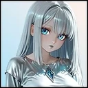
AIMyAkira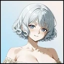
AmeliaAndi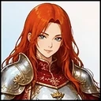
Annette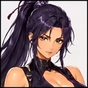
Anthrax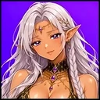
ArachneARCHIEArestesArnoldArtemis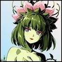
Audrey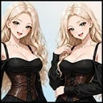
Ava and Eva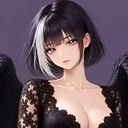
Azariel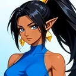
AzizaB
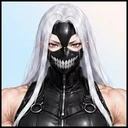
BayneBellaBellavia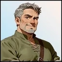
Ben Arthur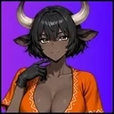
BessieBlinky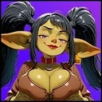
Bobo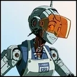
BR10DRBrandyC
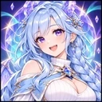
ChimeChloeChristy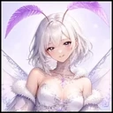
Chrysalia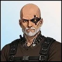
Cid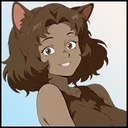
Cinnamon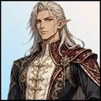
Coradio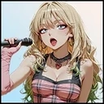
Cotton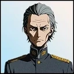
Councilor Voss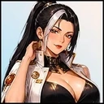
CressidaD
E
F
G–L
G
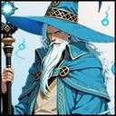
GandonGastoff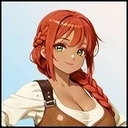
Gem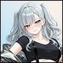
GhostGinger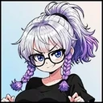
GlitchGrace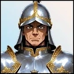
Gruff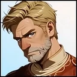
GuardH
I
J
K
L
M–R
M
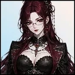
Magistra RuxandraMaizeMandarin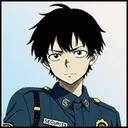
MarcusMarinaMary AnnMaster Lilu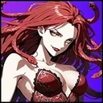
MelantheMikiMindyMittensMomosagi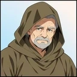
Monk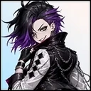
Motley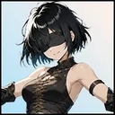
MuramasaMyrissN
O
P
R
S–Z
S
T
U
V
W
Y
Z
按头像与姓名找人物
先对照头像确认人物，再点击姓名查看指南。人物名保留与游戏一致的英文拼写。有些人物提供商店、技能或短事件，并没有完整个人路线；具体可做什么，请看对应页面。
A–F
A
B
C
D
E
F
G–L
G
H
I
J
K
L
M–R
M
N
O
P
R
S–Z
S
T
U
V
W
Y
Z
Adapted and updated from the community Chronoromancer Wiki. Community source and history · CC BY-SA 4.0. Game images © Chronoromancer Studio.